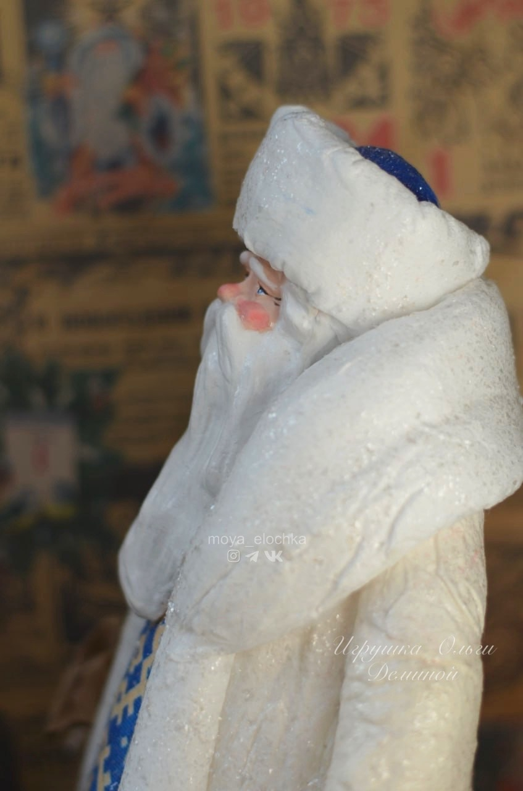

Дед Мороз
10 500 руб.
Дед Мороз, ведущий разговор, не забывайте об этом, если хотите вовремя получить подарок!
В наличии КупитьАвторские ватные игрушки Ольги Деминой 🎄❄️

10 500 руб.
Дед Мороз, ведущий разговор, не забывайте об этом, если хотите вовремя получить подарок!
В наличии Купить